Porterías de tubo galvanizado para fútbol 11, fútbol 7 y fútbol rápido, y porterías acojinadas para niños y entrenamiento. Todas llevan red tipo colmena tejida a mano.
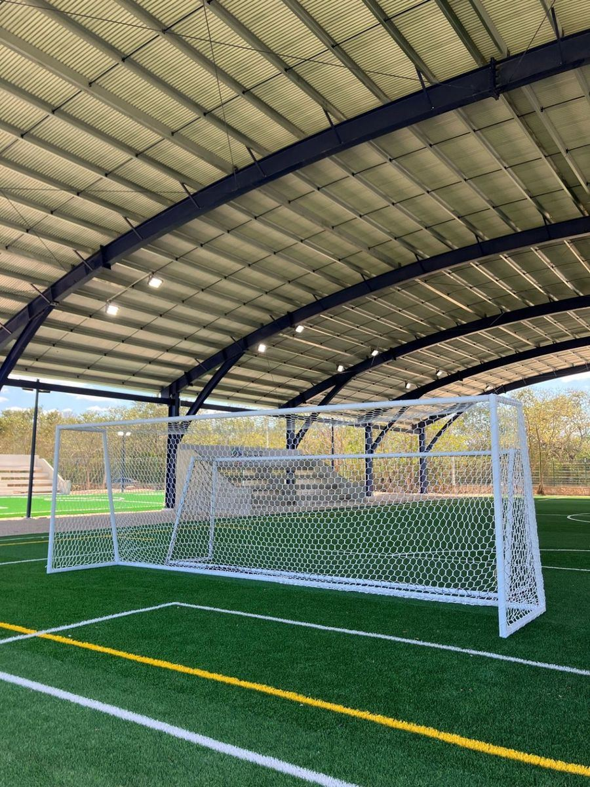
Fabricamos la estructura en tubo galvanizado, con cubierta de protección según el modelo, y la entregamos con su red tipo colmena, tejida a mano con cordón de poliéster trenzado de 60 filamentos.
La red viene etiquetada para señalar el centro de la portería, así se coloca más fácil y queda pareja.
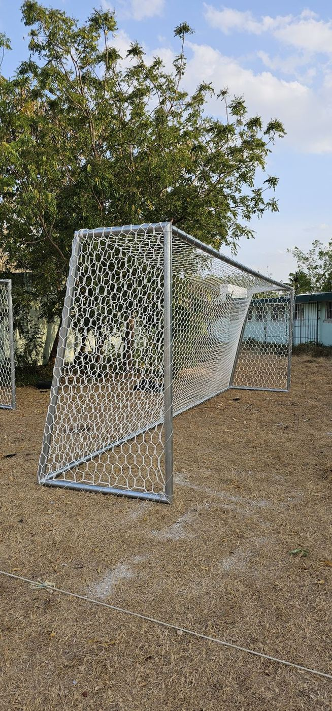
Elige según la cancha, la edad de los jugadores y el espacio que tienes.
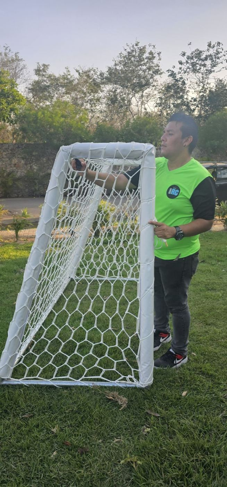
Medidas oficiales para campos y canchas de pasto natural o sintético.
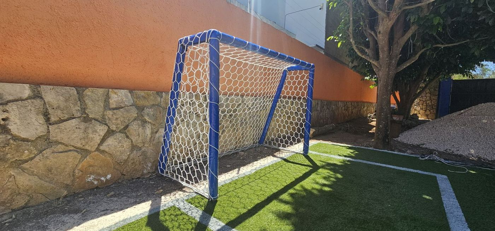
Porterías para canchas de renta, clubes y complejos deportivos.
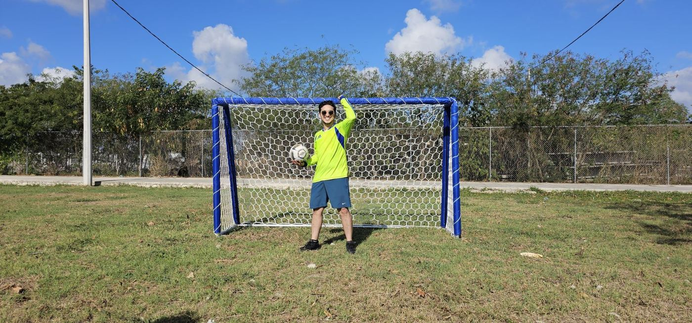
Porterías acojinadas, más seguras para los más pequeños.
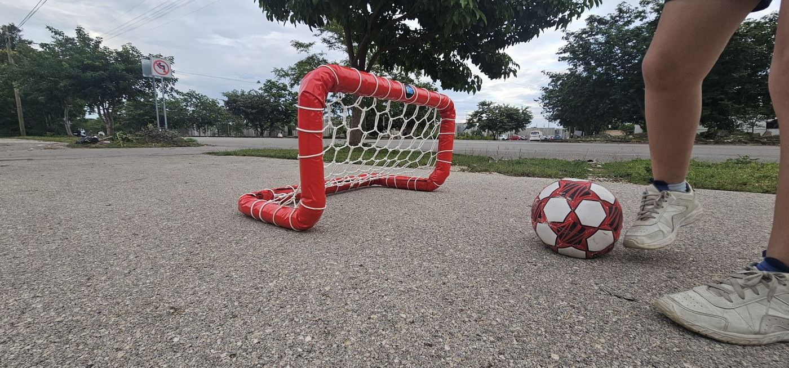
Mini porterías para ejercicios de precisión en espacios reducidos.
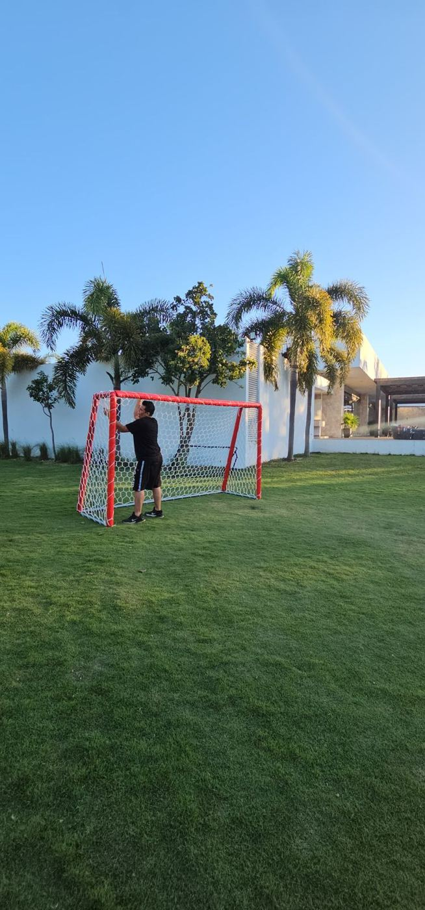
Para jugar en el patio, la quinta o el jardín.
| Estructura | Tubo galvanizado |
| Acabado | Galvanizado; pintura blanca opcional con costo adicional (Oficial y Fut 7) |
| Acojinadas | Recubrimiento de polifoam y cubierta de lona oplex de alta tenacidad, en colores personalizados (Microbio, Juvenil, Infantil y Mini) |
| Red | Cordón de poliéster trenzado de 60 filamentos, tejido tipo colmena, hexágono de 10 × 10 cm |
| Venta | Por pieza o por par |
| Modelo | Ancho × alto | Tipo |
|---|---|---|
| Oficial (fútbol 11) | 7.50 × 2.50 m | Galvanizada |
| Fútbol 7 | 6.00 × 2.00 m o 5.00 × 2.00 m | Galvanizada |
| Microbio | 3.20 × 1.80 m | Acojinada |
| Juvenil | 2.00 × 1.50 m | Acojinada |
| Infantil (plegable) | 1.50 × 1.00 m | Acojinada |
| Mini | 0.75 × 0.50 m | Acojinada |
¿Necesitas otra medida? Te fabricamos la portería a la medida de tu cancha. ¿Solo te falta la red? Ve redes para porterías.
Selecciona el modelo de portería, cuántas necesitas y el acabado. Te mandamos la cotización por WhatsApp con el envío incluido.
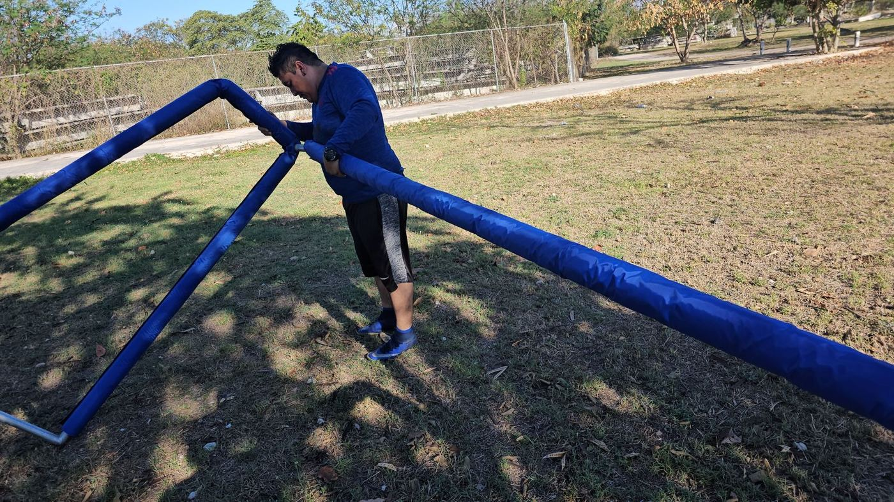
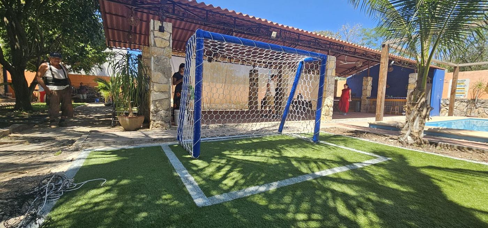
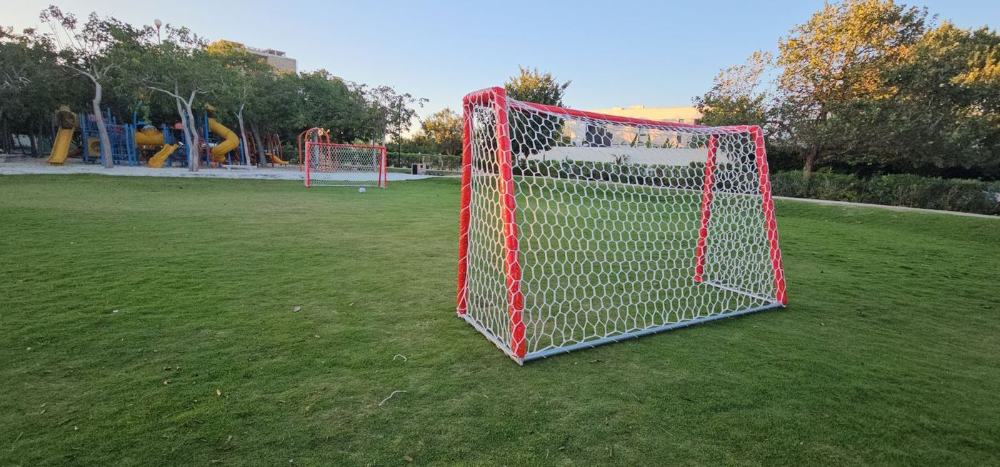
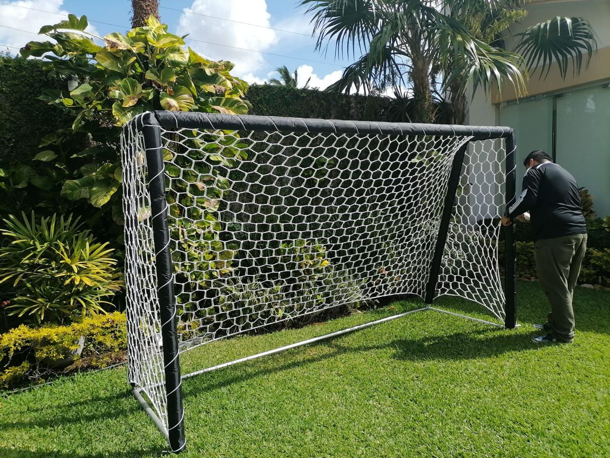
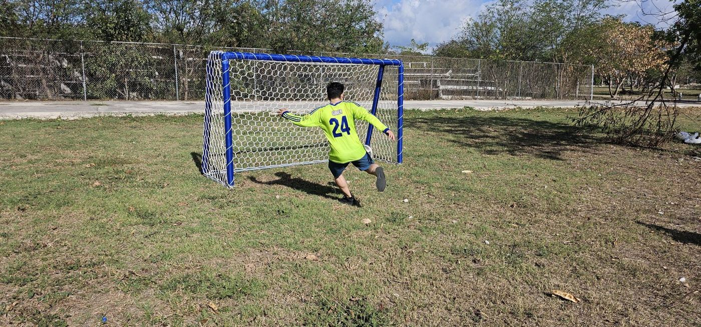
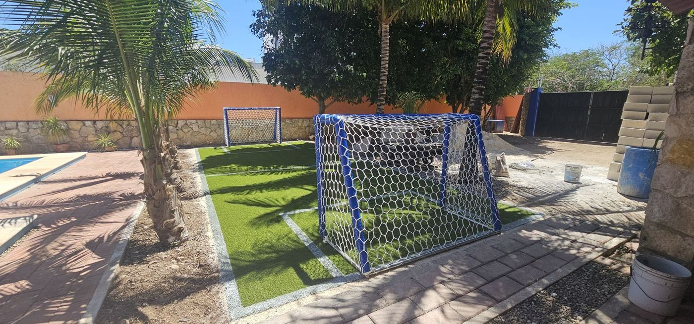
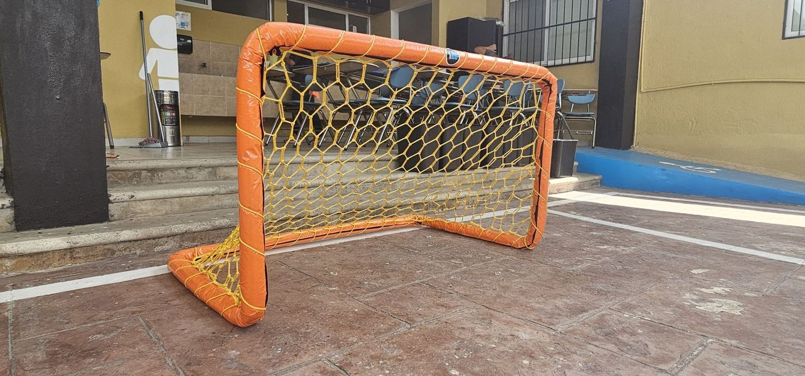
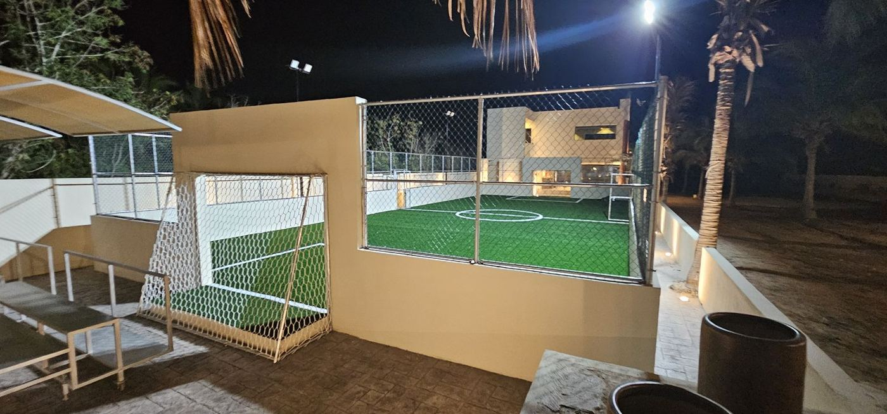
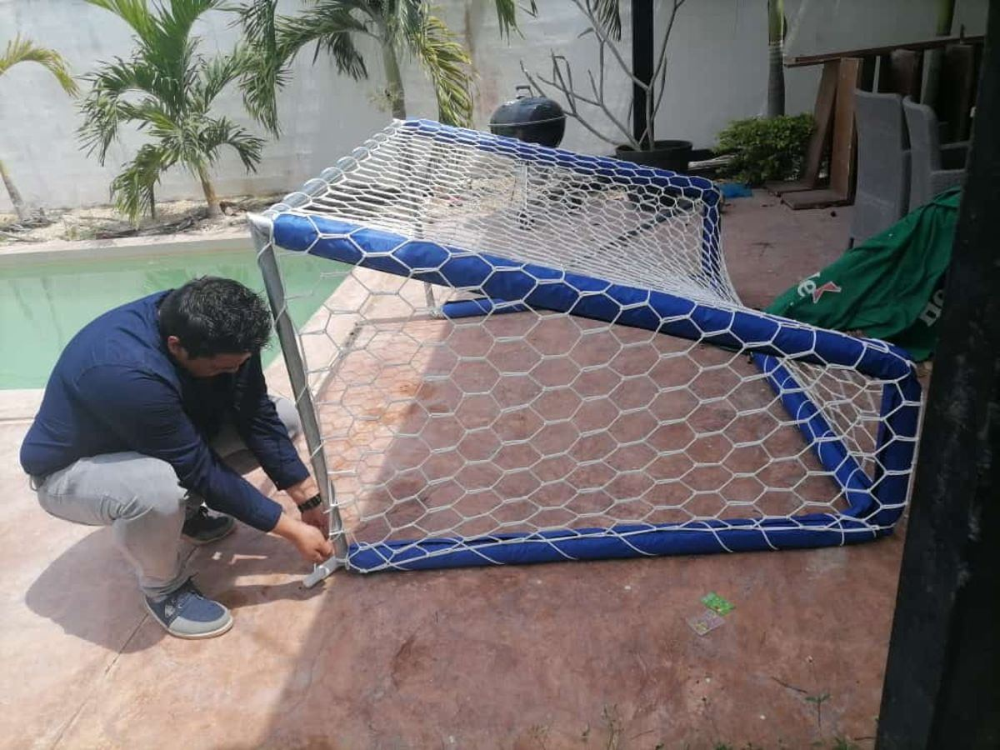
Sí. Todas nuestras porterías se entregan con su red tipo colmena.
De tubo galvanizado. Las porterías Oficial y de fútbol 7 pueden pintarse de blanco con un costo adicional; las de niños van acojinadas con polifoam y lona.
La Microbio (3.20 × 1.80 m), la Juvenil (2.00 × 1.50 m), la Infantil (1.50 × 1.00 m) y la Mini (0.75 × 0.50 m). Todas son acojinadas.
Sí, puedes pedir una pieza o el par.
Sí. Mándanos las medidas que necesitas o las de la portería que ya tienes y te cotizamos una a la medida.
Sí, enviamos a todo México. El envío se cotiza según tu ciudad.